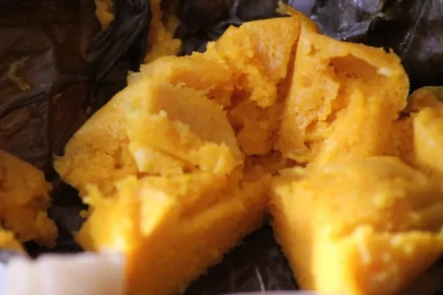
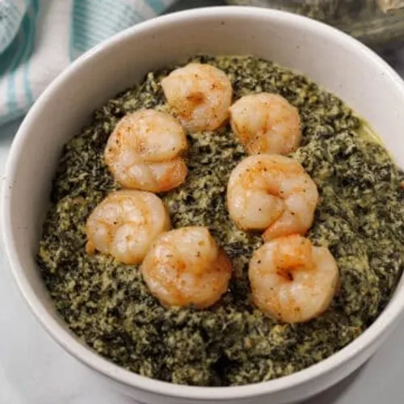
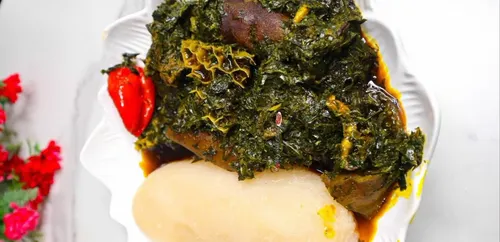
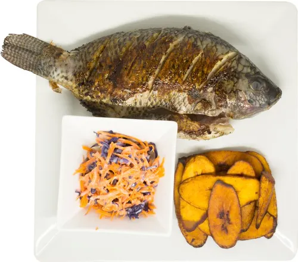
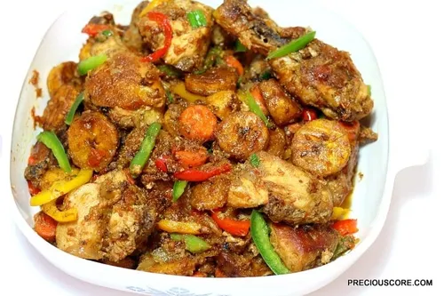

Dgustez nos plats traditionnels camerounais préparés avec passion. De Douala à Yaounde, voyagez a travers nos saveurs authentiques.


Délicieux Ndole accompagne de miondo et de plantain mur.

Plat riche en legumes, viande de bœuf et peau de bœuf (kanda).

Bar braise au charbon avec sa sauce pimentee et batons de manioc (Bobolo).

Le fameux Poulet Directeur General : poulet frit, plantains et legumes croquants.